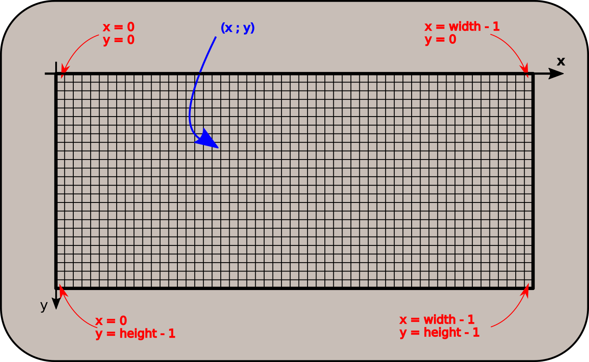

Les images matricielles
Avant toutes choses, nous allons utiliser le module pillow de Python.
Nous allons donc l'installer dans Thonny, en utilisant le menu Tools > Manage Packages, et dans la barre de recherche, chercher le module pillow, et l'installer si il n'est pas déjà installé.

Notion de BitMap : une image en noir et blanc
Bitmap
Analyser une première image
Considérons l'image suivante :

- Téléchargez ici cette image et sauvegardez-la dans un dossier
BitMapque vous aurez créé. - Quel est le format de cette image ? Recherchez sa signification sur le web.
- Quelles en sont les dimensions en pixels ? Quelle est sa taille en octets ?
- Ouvrez l'image grâce au logiciel
Hex Editor Neo(que vous pouvez mettre en Français par l'intermédiaire deTools > Settings > Language). Le réglage basique deHex Editor Neodonne les valeurs hexadécimales des différents octets composant l'image. Dans la colonne située à droite de ces valeurs hexadécimales, on trouve une représentation de ces octets au format ANSI, c'est-à-dire sous forme de caractères. Que retrouve-t-on au tout début de cette colonne ? -
En cliquant droit sur les groupes d'octets, effectuer le réglage suivant :
Afficher comme > DécimaleColonnes > 32 colonnes
Puis supprimer les 13 premiers octets (juste avant la première valeur 255). Dézoomer avec
CTRL + Molette de souris. Que voit-on apparaître ? -
Que représente une valeur décimale
255(ouffen hexadécimal) ? - Que représente une valeur décimale
0(ou00en hexadécimal) ?
A venir !
Les images matricielles
Les images matricielles, ou « cartes de points » (de l'anglais Bitmap) est une image constituée d'une matrice de points colorés. C'est-à-dire, constituée d'un tableau, d'une grille, où chaque case possède une couleur qui lui est propre et est considérée comme un point. Il s'agit donc d'une juxtaposition de points de couleurs formant, dans leur ensemble, une image.
Dans notre cas, l'image est une matrice carrée de taille \(32\times 32\) pixels. Chaque pixel peut donc être repéré par ses coordonnées, comme sur le schéma ci-dessous, où width (largeur en anglais) et height (hauteur en anglais) sont les dimensions de l'image. Attention ! Le sens de l'axe de ordonnées est inverés par rapport aux mathématiques !

Taille des images en noir et blanc
En fait notre image utilise beaucoup plus de place en mémoire qu'elle ne le devrait. En effet, pour représenter 2 couleurs (noir et blanc), un seul bit suffit. 0 représente un pixel noir, et 1 représente un pixel blanc. Le format pgm n'est pas vraiment adapté aux pures images en noir et blanc, puisqu'il utilise 1 octet complet pour représenter la couleur, soit 8 fois plus que ce qui est strictement nécesaire.
Manipulation d'images avec Pillow
Module Pillow
Le module pillow de python permet la manipulation des images. Son guide (en anglais) est disponible ici.
Son utilisation basique est relativement simple, testez par exemple le code suivant :
1 2 3 4 5 6 7 8 9 10 11 12 13 14 15 16 | |
Explicitons alors ce code :
- Ligne 1 : on importe la classe
Imagedu modulePIL(c'est-à-direpillow). - Ligne 3 : on utilise la méthode
opende la classeImagepour ouvrir l'imageYingYang.pgmet la stocker dans la variableoriginale, qui est donc un objet de typeImage. - Ligne 4 : on utilise l'attribut
sizedes objetsImageextraire la largeur et la hauteur de notre image, et les stocker dans les varaibleswidthetheight, de typeint. - Ligne 6 :
copieest un nouvel objet de typeImage, qui possède les mêmes caractéristiques que l'image originale : sonmode(nous reviendrons dessus plus loin), et sa taille grâce à l'attributsize. - Lignes 8-9 : on va parcourir l'image originale pixel par pixel, en efectuant le parcours colonnes par colonnes.
- Lignes 10 : on récupère la valeur du pixel de coordonnées \((x;y)\) de l'image originale grâce à la méthode
getpixel, et on regarde si il est blanc (==255). - Ligne 11 : si la condition précédente est vraie, on va fixer la couleur du pixel de coordonnées \((x;y)\) de la copie à noir (
0), grâce à la méthodeputpixel(Attention !putpixeletgetpixeln'acceptent que des tuples pour les coordonnées ! Si vous oubliez la paire de parenthèses, vous risquez d'obtenirTypeError: putpixel() takes 3 positional arguments but 4 were given). - Lignes 12-13 : si la condition est fausse, on va fixer la couleur du pixel de coordonnées \((x;y)\) de la copie à blanc (
255). - Ligne 15 : on sauvegarde la copie sous le nom
YangYing.bmp. Vous devriez trouver ce fichier dans votre dossier. On notera que pillow accepte de changer le type de fichier (ici on est passé depgmàbmp). - Ligne 16 : on affiche l'image
copie.
Factorisation du code
Transformez le code précédenten créant une fonction inverseNB(img) qui prend en argument un objet img de type Image et qui renvoie un nouvel objet de type Image de même dimension et même mode que l'argument, mais ayant ses couleurs noirs et blanc inversées.
A venir !
Pour les cracks : améliorons le code
En fait le code ci dessus n'est valable que pédagogiquement, pour comprendre les . Il est tout à fait possible de se passer de la structure conditionnelle des lignes 10 à 13, qui peuvent être effectuées en une seule ligne ! Comment faire ?
A venir !
Les niveaux de gris
Un exemple
Une nouvelle image
On considère maintenant l'image suivante :

téléchargeable ici.
- Quelle est la dimension de cette image en pixels ? Quelle est sa dimension en octets ?
- Ouvrez-là avec
Hex Editor Neo. Quelle est la principale différence avec l'image précédente ? - Testez sur cette image la fonction
inverseNB. Obtient-on un négatif de cette image ?
Images en niveaux de gris - Grayscale
Pour représenter une palette de 256 couleurs allant du noir au blanc, on utilise un octet complet
- la valeur 0 représente le noir ;
- la valeur 255 représente le blanc ;
- une valeur proche de 0 représente un gris foncé
- une valeur proche de 255 représente un gris clair.
Une telle image, dite en « niveaux de gris », utilise 1 octet par pixel.
Manipulation d'une image en niveau de gris
Manipuler les images
- Téléchargez une image quelconque libre de droits sur internet - peu importe son format.
-
On cherche à obtenir un négatif de l'image. Pour ce faire, il faut utiliser une fonction mathématique. En effet, ce que nous voulons, c'est une fonction qui transforme :
- 0 en 255
- 1 en 254
- 2 en 253
- ...
- 254 en 1
- 255 en 0
Quelle est cette fonction ?
-
Créer alors une fonction python
negatif(img)qui renvoie le negatif de l'objetimgde typeImage. -
Eclaircissement d'une image :
Pour éclaircir une image, il faut transformer les valeurs grayscale de chaque pixel en les augmentant. Une possibilité simples est de les augmenter d'un terme constant, comme 20 par exemple. Ainsi, un pixel initalement à 0 sera changé à 20, et un pixel à 147 sera changé à 167 (pillow n'autorisera pas les dépassement au delà de 255, donc un pixel à 250 sera bien transformé à 255).
Créer alors une fonction python
eclaircir(img, t=20)qui renvoie un nouvel objet de typeImage, version éclaircie de l'objetimgde typeImagepassé en argument, et utilisant l'argument optionnelt. -
Assombrissement d'une image :
Créer de même une fonction python
assombrir(img, t=20)qui renvoie un nouvel objet de typeImage, version assombrie de l'objetimgde typeImagepassé en argument, et utilisant l'argument optionnelt. -
Etait-on vraiment obligé de faire deux fonctions ?
A venir !
Pour les cracks
Nos éclaircissement et assombrissement précédents ne sont guère satisfaisants... car nous ne jouons pas sur le contraste. Il existe bien de fonctions mathématiques permettant d'améliorer notrze mùéthode. Vous pouvez vous inspirer du travail de Paul Milan, très mathématique, ou bien tester les fonctionnalités du module pillow, en suivant par exemple ce tutoriel.
Images en couleur
système RGB
Il est temps de mettre un peu de couleur !
Synthèse additive RGB
Un pixel de couleur est représenté par un triplet \((R;G;B)\), où \(R\), \(G\) et \(B\) sont des valeurs de \(0\) à \(255\) représentant rspectivement les couleurs rouges, vertes et bleues. Un tel système permet de représenter \(256^3 = 16~277~216\) nuances de couleurs différentes, par synthèse additive des couleurs. Ce format est adapté à la lecture sur écran (on utilise un système différent pour l'impression des images, le système CYMB - Cyan Yellow Magenta Black - qui utilise la synthèse soustractive).

De ce fait, dans un format non compressé comme le format BMP, chaque pixel est représenté par 3 octets.
Exemple
On considère l'image suivante :

L'image est de dimension \(320 \times 100\) et pèse 96 ko, ce qui correspond \(320 \times 100 \times 3 = 96~000~o\).
RGB et pillow
- Téléchargez l'image suivante :